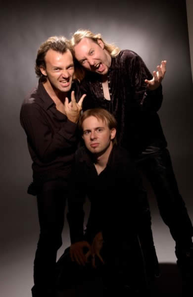

Entrevista
de Agone a Tartarean Desire - Agosto de 2002
Oi, como você
está?
Eu estou bem, obrigado!
Seu segundo álbum The
Last Bewitchment esteve durante algum tempo disponível
nas lojas. Como foi recebido?
A resposta que nós tivemos foirealmente muito positiva,
tanto nas opiniões da imprensa quanto na recepção
dos fãs por e-mails, e as vendas vão muito bem.
Este
trabalho demorou quase três anos para ficar pronto. Por
que demorou tanto? Você está satisfeito com o resultado?
Há várias razões para que houvesse este
tempo entre Emanate e The Last Bewitchment.
A primeira é o conflito com os membros da banda anterior.
Nós decidimos prosseguir com a banda, mas havíamos
perdido vários membros. Assim que completamos a formação
da banda, terminamos de escrever o álbum (isso levou
quase um ano), gravamos três demos e apresentamos para
a nova gravadora. Assim, soma-se a gravação do
álbum, a pós-produção e o planejamento
do lançamento e lá se vão três anos...
Quais são
as maiores diferenças entre Emanate e The
Last Bewitchment?
Eu penso que a diferença principal seja uma maturidade
maior que nos conduz a uma composição e orquestração
mais ricas. Tivemos também o apoio de bons técnicos.
The Last Bewitchment também é um álbum
conceitual, o que dá uma identidade maior a este álbum.
Utilizando vocais masculinos guturais
e vozes femininas "limpas", a banda certamente será
comparada às bandas norueguesas. Mas vocês são
influenciados por estas bandas?
Não podemos negar que somos influenciados por estas bandas.
Mas tentamos nos expressar sem impor limites de estilo ou instrumentos.
Temos influências clássicas e cada membro do Penumbra
tem uma influência própria; de Rammstein
à Therion,
Vivaldi...
Uma banda com sete membros deve
ser difícil de se organizar. Quando você compõe
material novo, há sete opiniões diferentes?
O que poderia ser uma dificuldade se tornou um estímulo
para nós. Compomos juntos e um completa o outro. Algumas
canções estão compostas por dois ou três
membros; algumas outras canções são escritas
por toda a banda. E uma vez que as canções são
compostas, nós as organizamos em nossos estúdios
caseiros. Claro que, às vezes nós temos opiniões
diferentes, mas nós sempre conseguimos concordar com
o que parece ser a melhor solução.
O
line-up sofreu muitas alterações nos últimos
tempos. Você acha que encontrou a formação
ideal?
Nós entendemos que essa é a formação
ideal: Jarlaath (oboé e vocal principal), Dorian (violões),
Neo (violões) e Zoltan (teclados) são as bases
da banda. Eu (Agone / Baixo violão e vocal de apoio)
cheguei há um ano e meio, e Garlic (bateria) e Kyrsten
(soprano) chegaram há seis meses atrás. Tocamos
em março com o Within
Temptation e pelo entusiasmo do público, nos
convencemos que esta é a formação mais
eficiente que o Penumbra já teve.
Que tipo de
influência musical os atuais membros têm? Você
já participou de outras bandas ou projetos musicais antes
do Penumbra?
Quase todos os membros do Penumbra pertenceram a outras formações
musicais antes de Penumbra. Alguns também estão
atualmente em outras bandas, e alguns têm projetos comuns.
Como: Catharsis, Everest, Lux Incerta, Sky Zoo...
Você sabe o que os componentes
anteriores (David, Scyllia, Medusa, Hekchen e Aldric) têm
feito após deixarem a banda?
Sabemos que a maioria continuou tocando em outras bandas; mas
nós temos um bom relacionamento com eles.
Por que vocês não
usam os nomes verdadeiros na banda? Vocês temem que as
pessoas façam algum tipo de associação
entre os componentes e o Penumbra?
Não; a verdade é que quando entramos no "mundo"
do Penumbra, assumimos o caráter deste universo musical
por nossos nomes, por nossas roupas... e estamos orgulhosos
por tocar no Penumbra. Eu penso que é um dever assumir
essa faceta musical para o público; e não apenas
músicos que tocam sem qualquer aplicação.
O novo álbum
foi gravado com Terje Refsnes. Como foi trabalhar com ele em
Sound Suite?
Foi um grande prazer! Ele é uma pessoa muito profissional.
Realmente foi uma grande experiência e ele ampliou nossa
visão musical. Estamos muito contentes com o resultado.
Ele pôs seu talento a serviço de nossas idéias
e nós lhe agradecemos por isso.
O que você acha de bandas
que gravaram lá, como o Tristania
e o Trail of Tears? Foi por isso que este estúdio
foi escolhido?
O Tristania e o Trail of Tears têm,
num ponto de vista técnico, uma boa música que
se ajusta bem à proposta deles. O estilo deles é
muito diferente do nosso e nós temos a própria
personalidade. Não escolhemos gravar com Terje, foi a
gravadora que ofereceu esta oportunidade e nós não
recusamos. Como eu lhe falei, foi uma experiência muito
boa para nós.
Você teve a participação
de quinze músicos convidados na gravação
deste álbum. Como você entrou em contato com eles
e quem são estes músicos?
Nós temos muitos contatos na música clássica,
como vários integrantes vêm deste universo. Assim
nós conseguimos encontrar todos os músicos que
precisávamos. São todos amigos dos amigos e assim
foi um prazer gravar com eles!
Influências clássicas
são aparentemente muito importantes para você.
O que você acha de bandas como o Therion e o
Haggard que levaram mais adiante este conceito? Para
onde seguirá o Penumbra no futuro?
Neste momento nossa meta é usar instrumentos clássicos
quando acharmos que a música necessita disto, mas podemos
muito escrever uma canção só com dois violões
e uma voz. Para nós é apenas uma questão
de necessidade. Mas com instrumentos clássicos nós
podemos dar uma outra dimensão à nossa música.
Não sabemos o que está diante de nós. Não
impomos nenhum limite nisso...
Em fevereiro e março a banda
fez pequenas excursões na Holanda e França junto
com Dying Tears, We The Gods e Within
Temptation, como é que foi? Como foi tocar ao vivo?
Nós amamos excursionar com outras bandas e tocar ao vivo!
É um sonho para qualquer músico novato e nós
tivemos a sorte de fazer isso se tornar realidade. As bandas
que nós tocamos junto são muito boas e em todos
os lugares havia um bom público. Compartilhamos muitos
bons momentos. O Penumbra ao vivo é uma outra dimensão.
Vocês
também tocaram em festivais como Wave Gotik Treffen
e Z7; vocês gostam mais de tocar em festivais
voltados para o público Metal ou em festivais góticos?
Por quê?
Nós estamos entre o metal
e o gótico; por isso, gostamos de tocar em ambos os festivais.
Todas as multidões são diferentes e é sempre
um desafio. Nossa música é composta por todas
essas influências e assim ficamos à vontade em
ambas as situações.
Você sabe onde estão
a maior parte de seus fãs? Quem se atrai com a música
do Penumbra?
Eu penso que a maioria dos nossos fãs estão na
Holanda (nós amamos a Holanda!) e Alemanha, onde Emanate
vendeu mais de 3000 cópias. Estes países e os
escandinavos têm uma cultura Metal que não temos
na França. Como eu disse, nossa música atrai o
público do Metal, os góticos e o clássico.
Portanto, esperamos que nossa música possa ir além
destes conceitos...
Qual o seu "Top 5" de
álbuns em todos os tempos?
Pra mim é o October Rust (Type
O Negative), Discouraged ones (Katatonia), The
Angel... (My Dying Bride), Seventh Son... (Iron Maiden)
e Draconian Times (Paradise Lost). Mas é difícil
escolher porque há muitos álbuns bons. Depende
do meu humor...
Quais as metas para o futuro próximo?
Em primeiro lugar, nós queremos tocar ao vivo o mais
que pudermos por toda parte da Europa (e além) e se possível,
por que não na Suécia? Nós gostamos realmente
de participar de turnês. Então, continuaremos a
compor o nosso terceiro álbum.
Agora você vai opinar sobre
alguns temas específicos:
Se alguém
matasse Hitler antes dele assumir o poder.
Nós não falamos sobre política. Apenas
nos preocupamos com música (Nota do Editor:
Esta não seria uma questão de ética ao
invés de política?).
Destruir completamente uma igreja
porque é "má".
É uma pena porque nós gostamos de Igreja.
Queimar completamente uma igreja
porque representa opressão.
Mesma resposta.
Sado-masoquismo.
Você faz o que você quer com seu corpo...
Pena de Morte
Para os pedófilos.
Mentir se for em próprio
benefício.
Esta não é minha filosofia.
Censura
"Dane-se".
Religião
Porque as pessoas temem a morte e precisam achar uma explicação
para ela. Eu sou agnóstico...
Comunismo
Nós não nos preocupamos com política.
Deixe um recado para seus fãs.
Nós esperamos vê-los o quanto antes em turnês
e desejamos que eles sintam a mesma emoção que
sentem quando ouvem The Last Bewitchment. Obrigado
pelo apoio, nós tocamos por vocês!
Extraída
de www.tartareandesire.com
Traduzida
e adaptada por Spectrum